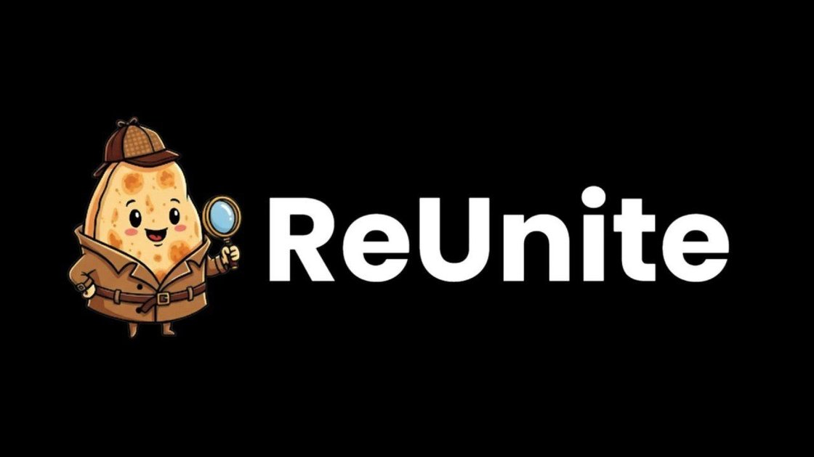
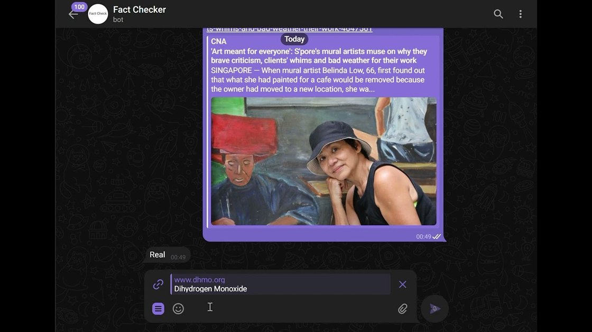

DLW
DLW
Most Useful
01 · NTU SummerBuild 2025
ReUnite — AI lost & found
An AI lost-and-found platform that won “Most Useful” out of 50+ teams. Image-to-text matching lifted accuracy by 60%.
View case studyI build AI systems end to end — from the model humming on bare metal to the interface a person actually touches. Security operations was my way in, and it stuck: I still size up everything by how it can fail and who can get to it. When it counts, I move fast.

Most UsefulAn AI lost-and-found platform that won “Most Useful” out of 50+ teams. Image-to-text matching lifted accuracy by 60%.
View case study
A Python Telegram bot that flags fake news with Gemini-powered credibility checks — 20% better detection and 30% faster responses.
View case studyLanguages
Web & Frameworks
AI / ML / Data
Tools
Huawei Technologies Co., Ltd.
Building something that needs intelligent systems? Let’s talk.
// or reach me directly
Download résumé